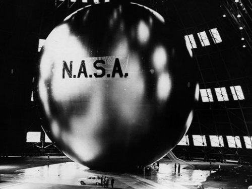
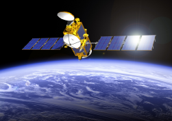

Quand l’industrie emménage dans l’espace
L’Homme n’aurait évidemment pas pu coloniser l’espace sans avoir un but pécunier à l’esprit pourrait-on dire. Seulement on oublierait dans ce cas l’importance des télécommunications dans le développement de notre société.
Depuis l’Antiquité, nous nous demandons comment communiquer à une grande distance dans un bref délai et cela n’est réellement possible que depuis moins de quatre siècles avec l’apparition des télégraphe optiques au XVIIème et au XVIIIème siècle puis du téléphone en 1874.
Le terme « télécommunications » se réfère à la transmission, l’émission ou la
réception à distance de signaux diffusant des informations de toute nature : texte, image,
son etc. Par opposition aux messagers et postiers, les télécommunications véhiculent les
messages immatériels. [1]
Une immense quantité d’informations
passe d’un bout à l’autre de la Terre grâce à des câbles et par les ondes radio dans
des réseaux tout aussi grands. Si bien que ces technologies sont devenues indispensables et ceci
n’aurait pu se réaliser sans les progrès permis par l’électricité et plus tard par l’informatique.
Cependant, c’est avec l’essor de l’aérospatial et les premiers satellites que les télécommunications ont pris une toute autre échelle. Ce sont au départ des satellites passifs : leur mission est de réfléchir un signal d’une station terrienne à une autre, le tout premier est le satellite américain Echo 1 : une grosse boule recouverte d’aluminium de 30 m de diamètre.
- 
- Echo 1
- Le tout
premier satellite de télécommunications, envoyé par les américains le 12 août 1960
©NASA - domaine publique
La mise au point des satellites actifs leur permit plus tard de recevoir les signaux hertziens,
de les amplifier plusieurs milliards de fois et de les réémettre vers le sol.
Les premières liaisons satellites entre les Etats-Unis et la France
sont ainsi réalisées en 1965.
Mais par-delà ces seules applications, les enjeux économiques des télécommunications sont très
nombreux. Même si toutes les technologies de communications tendent à se compléter, la variété
des systèmes permet aux différentes sociétés de faire les meilleurs choix techniquement et
économiquement.
Aujourd’hui, avec plus de 100 satellites en orbite, les
télécommunications sont le secteur d’application du spatial le plus important. C’est ainsi
la seule activité spatiale commercialement rentable, donc qui s’est ouverte à la
concurrence internationale.
D’autres enjeux stratégiques s’appliquent, ainsi les armées sont le premier client des télécommunications spatiales. Grâce à des satellites dédiés, les militaires peuvent communiquer en permanence et en toute sécurité avec les lieux d’opérations. [2]
Enfin, dans un contexte de mondialisation croissante des échanges d’information, l’accès et l’utilisation des nouvelles technologies sont encore très inégalement répartis entre les différentes régions du monde. Et selon Nicholas Negroponte [3] grâce à leur capacité à assurer une large couverture, les satellites sont donc les seuls à pouvoir limiter ces déséquilibres. [4]
Surveiller l’environnement
Le troisième intérêt principal est de se retourner vers la Terre et veiller sur la nature.
Depuis que l’on est capable de mettre des satellites en orbite géostationnaire, nous avons aussi lancé des satellites dits "à orbite polaire", cette catégorie de satellites est dédiée à l’observation de la Terre.
- 
- Jason-2
- Le satellite
français d’observation des océans
© CNES
Par exemple, le satellite français Jason-2 est dédié à l’observation des océans
grâce à son altimètre très précis. Ses missions sont de répondre aux questions suivantes :
Quels sont les mécanismes qui font bouger les océans ? Comment seront les courants demain ?
La Terre est-elle en train de se réchauffer ?
Il mesure en continu la
hauteur des mers avec une précision de quelques centimètres. Il fournit ainsi des informations
utilisées dans de nombreux domaines : climatologie, navigation, pêche, aménagement du
littoral, exploitation off-shore, etc.
L’A-Train est une constellation de six satellites franco-américains qui volent en formation à quelques minutes d’intervalle. Bien que de formes et de tailles bien différentes, ils sont tous eux aussi dédiés à l’étude de la Terre.
Ci-dessous, vous pouvez voir une des applications environnementales des satellites :
Ainsi les dernières avancées technologiques, permettant plus de précision, font que l’on peut aujourd’hui mieux protéger et s’occuper nos écosystèmes grâce aux satellites, ce qui est crucial au XXIème siècle où les problèmes environnementaux deviennent une priorité.